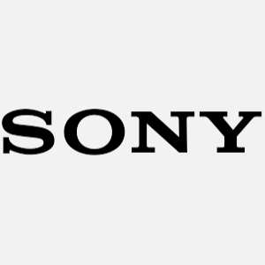
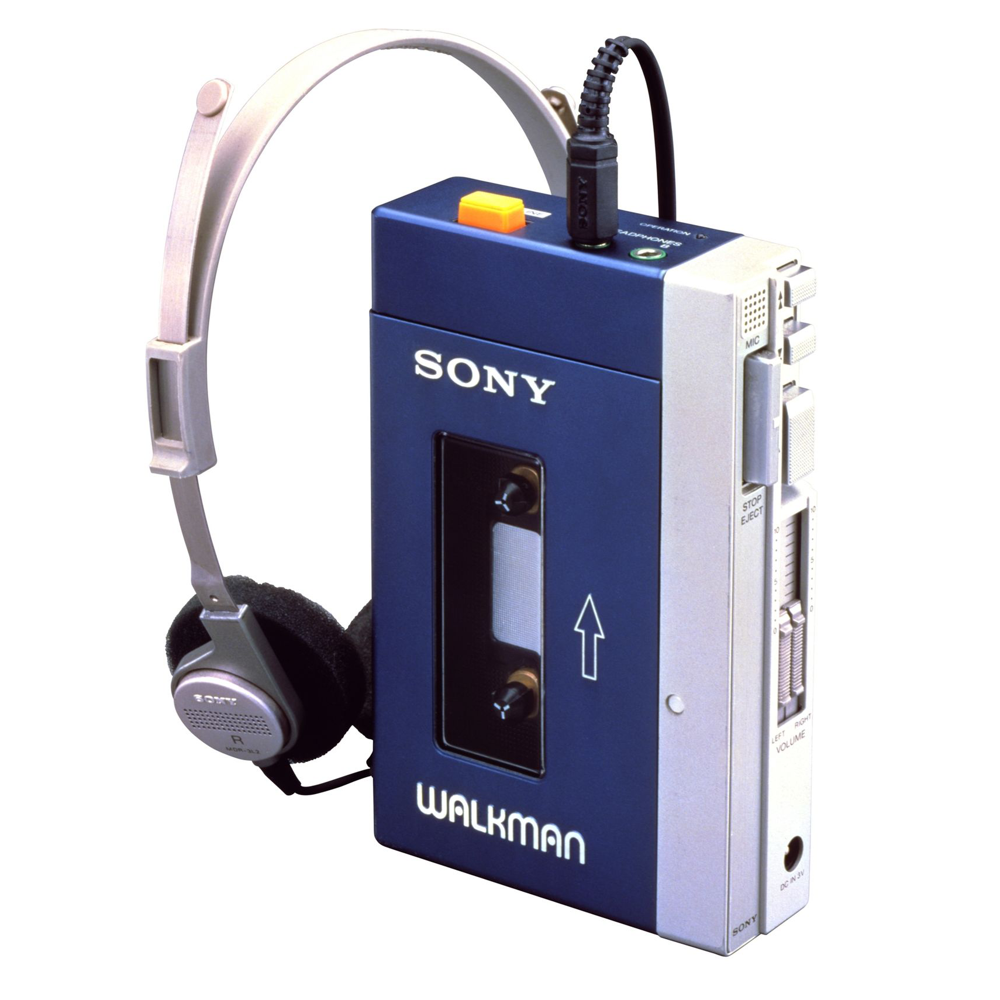
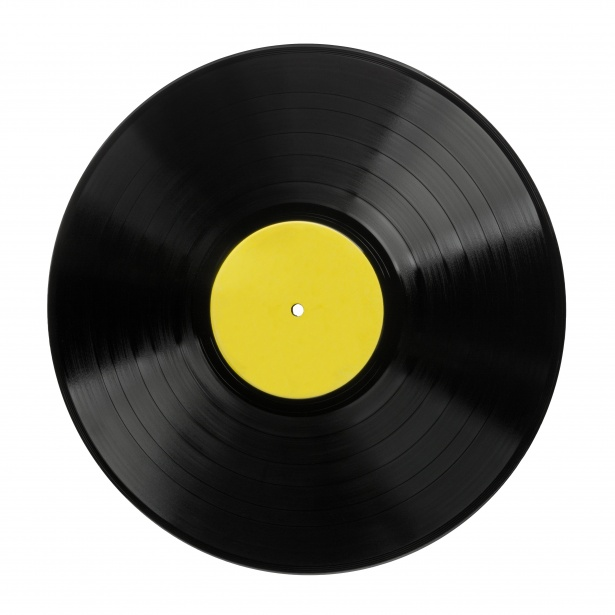

En ce qui concerne l'audio, nombres de solutions ont été envisagées avec comme fers de lance deux multinationales qui ont su révolutionner et faire évoluer les supports comme jamais auparvant.
DEUX ACTEURS MAJEURS

SONY CORPORATION
Sony Corporation est une société multinationale japonaise basée dans l'arrondissement de Minato à Tokyo (Japon). Elle est active dans différents domaines tels que l'électronique, la téléphonie, l'informatique, le jeu vidéo, la musique, le cinéma et l'audiovisuel en général.
Sony Corporate comprend plus de cent sociétés à travers le monde, dont Sony France SA, Sony Corporation of America, Sony Music Entertainment, Sony Pictures Entertainment, Sony Interactive Entertainment et est présent dans 183 pays (voir les entreprises de Sony Corporation).
Le groupe annonce le 19 mai 2020 se renommer pour la date du 1ᵉʳ avril 2021 en « Sony Group » (ソニーグループ) au cours d'une restructuration complète, la division électronique gardera quant à elle le nom "Sony".

KONINKLIJKE PHILIPS N.V.
Koninklijke Philips N.V., plus connu sous le nom de la société Philips, est une société néerlandaise d'électronique, basée à Amsterdam. Elle fait partie des plus grands groupes en matière d'électroménager, d’équipement médical et d’éclairage au monde.
En 2016, la société, qui emploie 114 000 personnes dans plus de cent pays (chiffres 2016), réalise un chiffre d'affaires de 24,52 milliards d’euros. Philips est organisé en trois activités, chacune d’entre elles correspondant à un domaine d'activité stratégique (DAS) de l’entreprise : Healthcare (« soins de santé ») : soins et santé ; Lighting (« éclairage ») : solutions d’éclairage pour professionnels et particuliers ; et Consumer Lifestyle (« mode de vie du consommateur ») : produits grand public.

BALADEUR CASSETTE
La présence de Sony sur ce marché était telle que le mot « Walkman » est devenu un terme générique pour désigner les baladeurs (ce dernier terme, alors inexistant, a été proposé depuis pour remplacer « Walkman »). Littéralement, ce terme anglais inventé au Japon est composé de « walk » (« marche ») et « man » (« homme »), il exprime donc le fait qu'une personne puisse utiliser l'appareil tout en se déplaçant.
Ce tout nouveau lecteur de cassettes portable est mis sur le marché japonais en 1979 sous le nom de « Walkman », nom proposé par Kozo Ohsone, le directeur du développement, en référence au produit précédent de la marque, le Pressman. Le stock initial est liquidé en un mois et Sony se prépare à porter son produit sur les marchés européens et américain. Il est décidé de renommer l'appareil « Freestyle » en Suède, « Storaway » au Royaume-Uni, et « Soundabout » aux États-Unis. C'est pendant une visite à Paris, que le vice-président de Sony, Akio Morita, décide de conserver le nom original car des enfants de ses employés lui demandèrent quand ils pourraient acheter leurs Walkman

VINYLES
Le disque microsillon a été le principal support de diffusion d'enregistrement sonore commercial pendant la seconde moitié du xxe siècle. Appelé à ses débuts microsillon, par opposition au 78 tours, puis disque, de son succès commercial à l'apparition du disque compact dans les années 1980, il est aussi appelé, par synecdoque vinyle ou disque vinyle depuis les années 2000, quand il connaît un relatif renouveau après avoir presque disparu, tandis que le CD décline face à la musique en ligne.
Le développement du polychlorure de vinyle, une matière plastique synthétique et le développement des tourne-disques à amplificateur électronique ont permis de multiplier par cinq ou six la durée d'écoute pour un disque de même taille tout en améliorant la qualité sonore : le bruit de fond et la distorsion diminue, la bande passante s'élargit. Le disque phonographique devient plus léger et plus durable. L'enregistrement peut être stéréophonique.
Un sillon en spirale parcourt la surface de chaque face. Le début de l'enregistrement se trouve côté extérieur. Les vitesses, le sens de rotation du disque, la largeur et la forme du sillon sont définies pour permettre d'utiliser tous les disques sur n'importe quel appareil. La forme et la taille des disques peuvent varier sans nuire à leur compatibilité. Il existe principalement deux formats, « LP » (de l'anglais « long play », « longue durée ») quand il s'agit d'un disque de 30 cm de diamètre tournant à 33 tours par minute, et single (avec généralement un seul morceau par face) pour un disque de 17,5 cm de diamètre tournant à 45 tours par minute. Les disques sont en général de couleur noire comme leurs prédécesseurs ; des disques de formes diverses ont été produits, notamment des « disques » paradoxalement carrés, et des disques de couleurs y compris aussi transparents, souples, décorés d'images comme les picture-discs, tous possédant un sillon lisible par les appareils ordinaires.